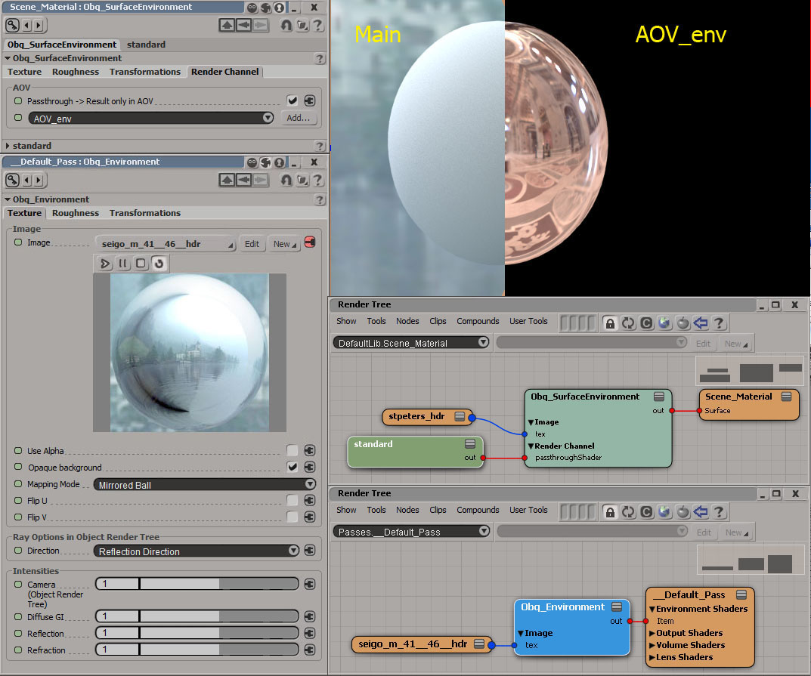

Obq_Environment
Class
Environment
Output
Color RGBA
Synopsis
Obq_Environement is an upgraded version of sta_environment. You can also plug it in the environment port of a material to use with Phong, Reflection shaders and more, but not the standard.
Usage
Obq_Environement is great for use with the environment port of an object's render tree when using the old Phong shader ( and Reflection shader ). But if you want to use it with the standard shader, you'll have to use it as a pass shader.

Fig.1 : In this example, we use the Obq_Environment of the pass shader to light the sphere, but we secretly render the reflections from the Obq_SurfaceEnvironment node and store it inside an AOV without affecting the main result.
Image
Image [tex]
The image to use as texture.
Use Alpha [considerAlpha]
Use the alpha channel of the image in the evaluation.
Note : This is off by default and unless you need it to drive an effect, it should remain off.
Opaque Background [opaque]
Uncheck if you want the background to be black with alpha = 0.
Mapping Mode [mapMode]
How to map this texture on a virtual environment sphere :
- Mirrored Ball
- Angular Map
- Lattitude-Longitude
- Vertical Cross
Flip U [flipU]
Flips the image horizontally.
Flip V [flipV]
Flips the image vertically.
Ray Options In Object Render Tree
Direction [onSurfaceMode]
When using this shader in the environment port of an object's material, you can use different directions :
- View Direction
- View Direction (Inverted)
- Surface Normal Direction
- Surface Normal Direction (no bump)
- Surface Normal Direction (Inverted)
- Surface Normal Direction (no bump, Inverted)
- Surface Normal Direction (Front-Facing)
- Surface Normal Direction (Back-Facing)
- Reflection Direction
- Reflection Direction (no bump)
- Refraction Direction
- Refraction Direction (no bump)
- Custom Direction [ port accessible in the "Ray Options"group in the render tree ]
Note : This option doesn't apply to pass shaders because the direction of ray that hits the background will be used.
IOR [ior]
Available when Refraction Direction is used, IOR stands for Index Of Refraction.
Custom Direction [customDirection]
This is the vector used as custom direction.
Note : It's only accessible via the port of the node's render tree layout.
Intensities
Camera [intensityCam]
This is a basic value multiplier.
Note : In a pass shader, this is for the eye rays that hits the background. When used in the environment port an object's material, this is the only useful multiplier and works for all direction.
Diffuse [intensityDifGI]
Multiplier for the indirect lighting caused by this environment. (Pass Shader only)
Reflection [intensityRfl]
Used for mirror reflection that hits the background. (Pass Shader only)
Glossy [intensityGlossy]
Used for glossy reflection that hits the background. (Pass Shader only)
Refraction [intensityRfr]
Used for refracted ray that hits the background. (Pass Shader only)
Roughness
Sample Level [sampleLevel]
The square root of the number of samples taken to create blurred background effect.
Note : If this is set to 5, for example, 25 rays will be shot.
Cone Angle [coneAngle]
The maximum cone angle in which the samples will be taken from. If set to 0, only 1 sample will be taken no matter the sample level.
Note : Shooting more rays will soften the noise.
Cos Lobe Gloss [cosLobeGloss]
This gloss translates into the cosine exponent of the cone distribution. This means that a value of 0 will produce a uniform distribution inside the cone while a higher value will give more of an elleptical shape distribution (Phong peaks). In other words, using a cone angle of 180 will give exactly a cos^n distribution.
Note : The equation used to transform gloss into exponent is : Exponent = Gloss/(1-Gloss)^8. Ex: A Gloss of 0.188 gives approximately an exponent of 1.
Clamp Sample Count [useSampleCount]
Check this and use the Max Sample Count to limit the number of environmenet samples taken.
Max Sample Count [sampleCount]
The maximum number of samples taken from the environment.
Note : Sample Level isn't texturable because the random samples are generated at update time. Using this port, you can texture the maximum number of rays shot knowing that it can never be higher than the square of the Sample Level value.
Max Sample Count Multiplier [sampleCountMultiplier]
A simple multiplier used to raise an 8-bit picture value above 1.
Note : You can set this to 255 and texture with the absolute value of samples you want.
Transformation
Use rotation at a global scope [globalRotation]
Checking this option will calculates the rotation matrix at update time. Meaning it'll be faster if you don't need per pixel rotations.
Rotation [rotation]
Rotation angles in degrees around the principal axis.